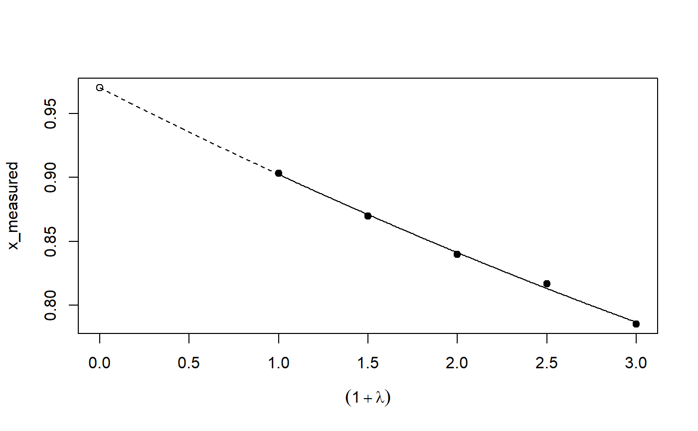
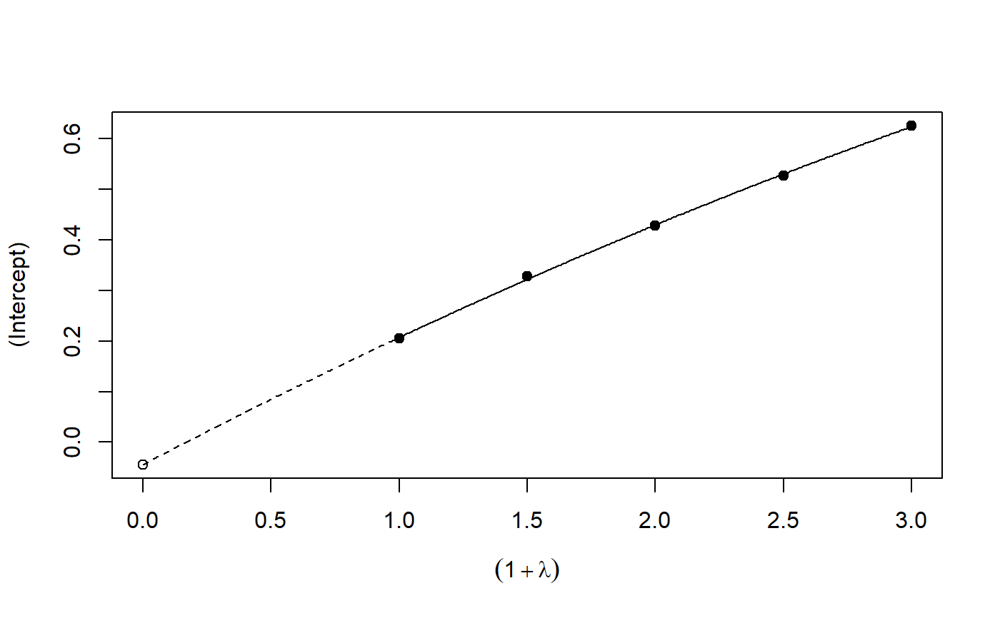
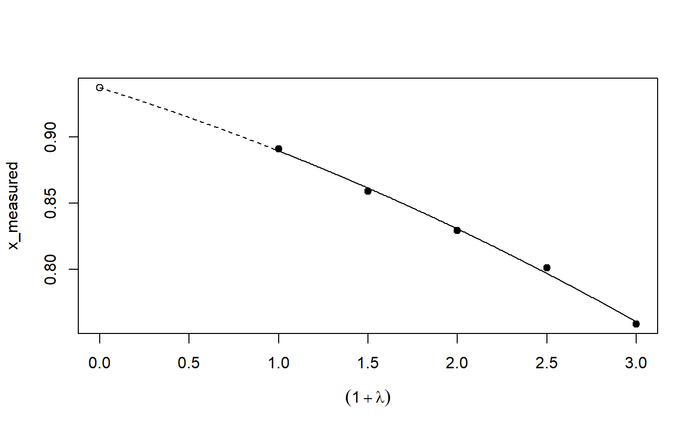

Implementation of the SIMEX algorithm for measurement error models according to Cook and Stefanski
simex(model, SIMEXvariable, measurement.error, lambda = c(0.5, 1, 1.5, 2), B = 100, fitting.method = "quadratic", jackknife.estimation = "quadratic", asymptotic = TRUE) # S3 method for simex plot(x, xlab = expression((1 + lambda)), ylab = colnames(b[, -1]), ask = FALSE, show = rep(TRUE, NCOL(b) - 1), ...) # S3 method for simex predict(object, newdata, ...) # S3 method for simex print(x, digits = max(3, getOption("digits") - 3), ...) # S3 method for summary.simex print(x, digits = max(3, getOption("digits") - 3), ...) # S3 method for simex refit(object, fitting.method = "quadratic", jackknife.estimation = "quadratic", asymptotic = TRUE, ...) # S3 method for simex summary(object, ...)
Arguments
| model | the naive model |
|---|---|
| SIMEXvariable | character or vector of characters containing the names of the variables with measurement error |
| measurement.error | given standard deviations of measurement errors. In
case of homoskedastic measurement error it is a matrix with dimension
1x |
| lambda | vector of lambdas for which the simulation step should be done (without 0) |
| B | number of iterations for each lambda |
| fitting.method | fitting method for the extrapolation. |
| jackknife.estimation | specifying the extrapolation method for jackknife
variance estimation. Can be set to |
| asymptotic | logical, indicating if asymptotic variance estimation should
be done, in the naive model the option |
| x | object of class 'simex' |
| xlab | optional name for the X-Axis |
| ylab | vector containing the names for the Y-Axis |
| ask | logical. If |
| show | vector of logicals indicating for wich variables a plot should be produced |
| … | arguments passed to other functions |
| object | of class 'simex' |
| newdata | optionally, a data frame in which to look for variables with which to predict. If omitted, the fitted linear predictors are used |
| digits | number of digits to be printed |
Value
An object of class 'simex' which contains:
the corrected coefficients of the SIMEX model,
the estimates for every lambda,
the naive model,
the known error standard deviations,
the number of iterations,
the model object of the extrapolation step,
the fitting method used in the extrapolation step,
the residuals of the main model,
the fitted values of the main model,
the function call,
the jackknife variance estimate,
the model object of the variance extrapolation,
the data set for the extrapolation,
the asymptotic variance estimates,
the estimates for every B and lambda,
Details
Nonlinear is implemented as described in Cook and Stefanski, but is numerically
instable. It is not advisable to use this feature. If a nonlinear extrapolation
is desired please use the refit() method.
Asymptotic is only implemented for naive models of class lm or glm with homoscedastic measurement error.
refit() refits the object with a different extrapolation function.
Methods (by generic)
plot: Plot the simulation and extrapolation steppredict: Predict using simex correctionprint: Print simex nicelyprint: Print summary nicelyrefit: Refits the model with a different extrapolation functionsummary: Summary of simulation and extrapolation
References
Cook, J.R. and Stefanski, L.A. (1994) Simulation-extrapolation estimation in parametric measurement error models. Journal of the American Statistical Association, 89, 1314 -- 1328
Carroll, R.J., Küchenhoff, H., Lombard, F. and Stefanski L.A. (1996) Asymptotics for the SIMEX estimator in nonlinear measurement error models. Journal of the American Statistical Association, 91, 242 -- 250
Carrol, R.J., Ruppert, D., Stefanski, L.A. and Crainiceanu, C. (2006). Measurement error in nonlinear models: A modern perspective., Second Edition. London: Chapman and Hall.
Lederer, W. and Küchenhoff, H. (2006) A short introduction to the SIMEX and MCSIMEX. R News, 6(4), 26--31
See also
Examples
## Seed set.seed(49494) ## simulating the measurement error standard deviations sd_me <- 0.3 sd_me2 <- 0.4 temp <- runif(100, min = 0, max = 0.6) sd_me_het1 <- sort(temp) temp2 <- rnorm(100, sd = 0.1) sd_me_het2 <- abs(sd_me_het1 + temp2) ## simulating the independent variables x (real and with measurement error): x_real <- rnorm(100) x_real2 <- rpois(100, lambda = 2) x_real3 <- -4*x_real + runif(100, min = -10, max = 10) # correlated to x_real x_measured <- x_real + sd_me * rnorm(100) x_measured2 <- x_real2 + sd_me2 * rnorm(100) x_het1 <- x_real + sd_me_het1 * rnorm(100) x_het2 <- x_real3 + sd_me_het2 * rnorm(100) ## calculating dependent variable y: y <- x_real + rnorm(100, sd = 0.05) y2 <- x_real + 2*x_real2 + rnorm(100, sd = 0.08) y3 <- x_real + 2*x_real3 + rnorm(100, sd = 0.08) ### one variable with homoscedastic measurement error (model_real <- lm(y ~ x_real))#> #> Call: #> lm(formula = y ~ x_real) #> #> Coefficients: #> (Intercept) x_real #> -0.004752 0.994554 #>#> #> Call: #> lm(formula = y ~ x_measured, x = TRUE) #> #> Coefficients: #> (Intercept) x_measured #> -0.01217 0.90327 #>(model_simex <- simex(model_naiv, SIMEXvariable = "x_measured", measurement.error = sd_me))#> #> Naive model: #> lm(formula = y ~ x_measured, x = TRUE) #> #> SIMEX-Variables: x_measured #> Number of Simulations: 100 #> #> Coefficients: #> (Intercept) x_measured #> -0.01528 0.97007 #>plot(model_simex)#> #> Call: #> lm(formula = y2 ~ x_real + x_real2) #> #> Coefficients: #> (Intercept) x_real x_real2 #> -0.01411 0.99094 2.00011 #>#> #> Call: #> lm(formula = y2 ~ x_measured + x_measured2, x = TRUE) #> #> Coefficients: #> (Intercept) x_measured x_measured2 #> 0.2050 0.8909 1.8593 #>(model_simex2 <- simex(model_naiv2, SIMEXvariable = c("x_measured", "x_measured2"), measurement.error = cbind(sd_me, sd_me2)))#> #> Naive model: #> lm(formula = y2 ~ x_measured + x_measured2, x = TRUE) #> #> SIMEX-Variables: x_measured, x_measured2 #> Number of Simulations: 100 #> #> Coefficients: #> (Intercept) x_measured x_measured2 #> -0.04414 0.93716 1.97311 #>plot(model_simex2)# NOT RUN { ### one variable with increasing heteroscedastic measurement error model_real (mod_naiv1 <- lm(y ~ x_het1, x = TRUE)) (mod_simex1 <- simex(mod_naiv1, SIMEXvariable = "x_het1", measurement.error = sd_me_het1, asymptotic = FALSE)) plot(mod_simex1) ### two correlated variables with heteroscedastic measurement errors (model_real3 <- lm(y3 ~ x_real + x_real3)) (mod_naiv2 <- lm(y3 ~ x_het1 + x_het2, x = TRUE)) (mod_simex2 <- simex(mod_naiv2, SIMEXvariable = c("x_het1", "x_het2"), measurement.error = cbind(sd_me_het1, sd_me_het2), asymptotic = FALSE)) plot(mod_simex2) ### two variables, one with homoscedastic, one with heteroscedastic measurement error model_real2 (mod_naiv3 <- lm(y2 ~ x_measured + x_het2, x = TRUE)) (mod_simex3 <- simex(mod_naiv3, SIMEXvariable = c("x_measured", "x_het2"), measurement.error = cbind(sd_me, sd_me_het2), asymptotic = FALSE)) ### glm: two variables, one with homoscedastic, one with heteroscedastic measurement error t <- x_real + 2*x_real2 + rnorm(100, sd = 0.01) g <- 1 / (1 + exp(t)) u <- runif(100) ybin <- as.numeric(u < g) (logit_real <- glm(ybin ~ x_real + x_real2, family = binomial)) (logit_naiv <- glm(ybin ~ x_measured + x_het2, x = TRUE, family = binomial)) (logit_simex <- simex(logit_naiv, SIMEXvariable = c("x_measured", "x_het2"), measurement.error = cbind(sd_me, sd_me_het2), asymptotic = FALSE)) summary(logit_simex) print(logit_simex) plot(logit_simex) ### polr: two variables, one with homoscedastic, one with heteroscedastic measurement error if(require("MASS")) {# Requires MASS yerr <- jitter(y, amount=1) yfactor <- cut(yerr, 3, ordered_result=TRUE) (polr_real <- polr(yfactor ~ x_real + x_real2)) (polr_naiv <- polr(yfactor ~ x_measured + x_het2, Hess = TRUE)) (polr_simex <- simex(polr_naiv, SIMEXvariable = c("x_measured", "x_het2"), measurement.error = cbind(sd_me, sd_me_het2), asymptotic = FALSE)) summary(polr_simex) print(polr_simex) plot(polr_simex) } # }